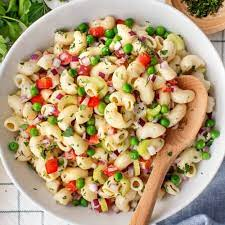

Macaroni Salad

Description
Quick, easy, and tasty macaroni and cheese dish. Fancy, designer mac and cheese often costs forty or fifty dollars to prepare when you have so many exotic and expensive cheeses, but they aren't always the best tasting. This simple recipe is cheap and tasty.
Looking for a homemade alternative to boxed mac and cheese that's just as quick and easy? This stovetop mac and cheese uses staple ingredients and comes together in just 25 minutes. You'll want to bookmark this recipe for busy weeknights. The good news is, it's so simple that once you make it a couple times, you'll likely have it memorized.
Ingredients
- 2 each skinless, boneless chicken breasts, diced
- 4 cups elbow macaroni
- 4 large eggs
- 1 cup mayonnaise, or more to taste
- 4 teaspoon white sugar
- 4 teaspoon white vinegar
- 1 teaspoon onion salt
- 1 teaspoon salt
- 1 teaspoon prepared yellow mustard
- 1 pinch ground black pepper to taste
Steps
- Bring a large pot of water to a boil and add chicken; continue to boil until no longer pink in the middle, 15 to 20 minutes. Let sit until cool enough to handle, then dice into small bite-sized pieces.
- While chicken cooks, bring a second large pot of lightly salted water to a boil. Cook elbow macaroni in the boiling water, stirring occasionally, until tender yet firm to the bite, about 8 minutes. Drain and rinse under cool water.
- At the same time, place eggs in a saucepan and cover with water. Bring to a boil, remove from heat, and let eggs stand in hot water for 15 minutes.
- Remove eggs from hot water and hold under cold running water to cool. Peel and dice eggs.
- Mix mayonnaise, sugar, vinegar, onion salt, salt, mustard, and pepper together in a large bowl. Mix in diced eggs, pasta, and chicken, adding a little more mayonnaise if too dry. Chill for at lest 1 hour, or up to 8 hours or overnight before serving.